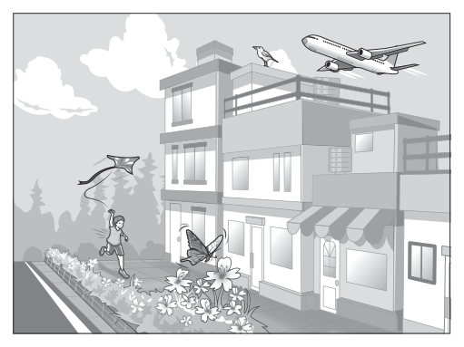
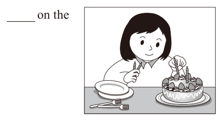

國中教育會考英語歷屆試題
開卷有益收錄國中教育會考「英語」民國 111–115 年的歷屆試題，共 5 份考卷、215 題，其中 215 題附有逐題詳解。每一份考卷都有獨立頁面，可以整卷看題目與答案，也可以直接線上作答。
線上練習 英語 →
本科概況
| 科目 | 英語（國中教育會考） |
|---|
| 題數 | 215 題 |
|---|
| 考卷份數 | 5 份 |
|---|
| 涵蓋年份 | 民國 111–115 年 |
|---|
| 詳解 | 215 題（100%） |
|---|
| 資料來源 | 心測中心 會考歷屆試題（依著作權法 §9，考試試題不受著作權保護） |
|---|
| 費用 | 免費，不需註冊，無廣告 |
|---|
詞彙、對話、短文與題組閱讀。
歷年考卷（5 份）
點任一年度可看整份試題與標準答案。
題目長什麼樣
以下自本科題庫抽 5 題示例，完整題目請看上方各年度考卷。
第 1 題
Look at the picture. All of the students who are exercising are wearing .

- （A）caps
- （B）glasses
- （C）jackets
- （D）pants
答案：（B）
詳解與考點
正解：題眼是 all of the students who are exercising，必須找出每一位正在運動的學生共同配戴的物品。圖中運動中的學生都戴著 glasses，glasses 意為「眼鏡」，故選 B。
A：caps 意為「帽子」，不是每位運動中的學生都戴帽子。
C：jackets 意為「外套」，不是每位運動中的學生都穿外套。
D：pants 意為「褲子」，不是題圖中所有運動者共同可辨識的配戴物品。
本題考點：看圖選詞——all 要求選出所有目標人物都符合的特徵；先逐一核對運動中的每位學生，再排除只符合部分人物的物品。
第 1 題
Look at the picture. A is flying over the houses.

- （A）bird
- （B）butterfly
- （C）kite
- （D）plane
答案：（D）
詳解與考點
正解：題幹的 is flying over the houses 要找正在房屋上空飛行的物體，關鍵是同時比對物體種類與高度位置。D 的 plane 意為「飛機」，圖片中飛越屋頂上空的是飛機，故 D 為正解。
A：bird 圖中的鳥站在屋頂上，沒有飛在房屋上空。
B：butterfly 指蝴蝶，圖片中的蝴蝶停在低處花叢，不符 flying over the houses。
C：kite 指風箏，雖由地面小孩牽著放，圖示高度與位置仍不符飛越房屋上空。
本題考點：圖文判讀——依動作與位置辨認字彙；位置判準——flying over the houses 指正在房屋上空飛行，不能只看物體是否出現在畫面中。
第 3 題
Our school basketball team won the national game last night. We are so them.
- （A）popular with
- （B）proud of
- （C）sorry for
- （D）worried about
答案：（B）
詳解與考點
正解：題幹說校隊贏得全國賽，空格要表達「我們為他們感到驕傲」。be proud of 表「以某人或某事為榮、為其感到驕傲」，故 B 為正解。
A：popular with 表「受歡迎」，不表示因獲勝而感到的情緒，故錯誤。
C：sorry for 表「感到抱歉」，與獲勝的正面情境不合，故錯誤。
D：worried about 表「擔心」，與慶祝獲勝的語氣不合，故錯誤。
本題考點：情感形容詞片語——be proud of 表為某人或某事感到驕傲；判準——先由事件的正負面判斷所需情緒，再選搭配正確的介系詞片語。
第 3 題
Mrs. Johnson can’t hear very well. If you need to talk to her, you must .
- （A）explain
- （B）hurry
- （C）listen
- （D）shout
答案：（D）
詳解與考點
正解：Mrs. Johnson 聽力不好，若要和她交談，說話者必須提高音量。D 的 shout 意為「大聲喊」，故 D 為正解。
A：explain 是「解釋」，沒有表示提高音量，不能解決聽不清楚的問題，錯誤。
B：hurry 是「趕快」，與聽力無關，錯誤。
C：listen 是「聽」，此處 must 的主詞是 you；需要聽的人是 Mrs. Johnson，不是說話者，錯誤。
本題考點：語境詞彙——先辨認問題的對象與動作執行者；聽力不足時，說話者要 shout，不能把 listen 的動作主詞放錯。
第 1 題
Look at the picture. The woman is putting on the cake.

- （A）candles
- （B）forks
- （C）plates
- （D）strawberries
答案：（A）
詳解與考點
正解：題幹的 putting on the cake 要配合圖片中女子正在把細長物插到蛋糕上的動作。candles 表「蠟燭」，生日蛋糕上常插蠟燭，put candles on the cake 的搭配也正確，因此 A 為正解。
B：forks 表「叉子」，圖中的叉子是餐具，應放在桌上，不是插在蛋糕上。
C：plates 表「盤子」，圖中的盤子也擺在桌上，不能符合女子放到蛋糕上的動作。
D：strawberries 表「草莓」，可作蛋糕裝飾，但圖中女子正在插的是蠟燭，非放草莓。
本題考點：看圖字彙——先以圖片辨認物品，再以句中動作選擇名詞；常用搭配——put candles on a cake 指在蛋糕上插蠟燭。
國中教育會考其他科目
題目與標準答案出自心測中心 會考歷屆試題（依著作權法 §9，考試試題不受著作權保護），依《著作權法》第 9 條為非著作權標的，得自由利用；
本專案撰寫的詳解以 CC0 1.0 貢獻至公眾領域。詳解為 AI 整理的學習輔助，並非官方標準答案。